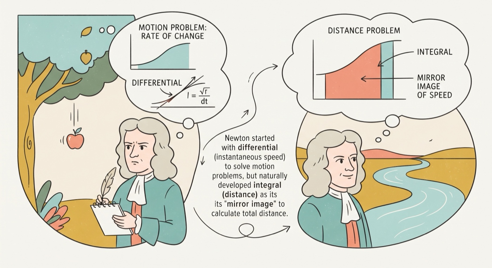
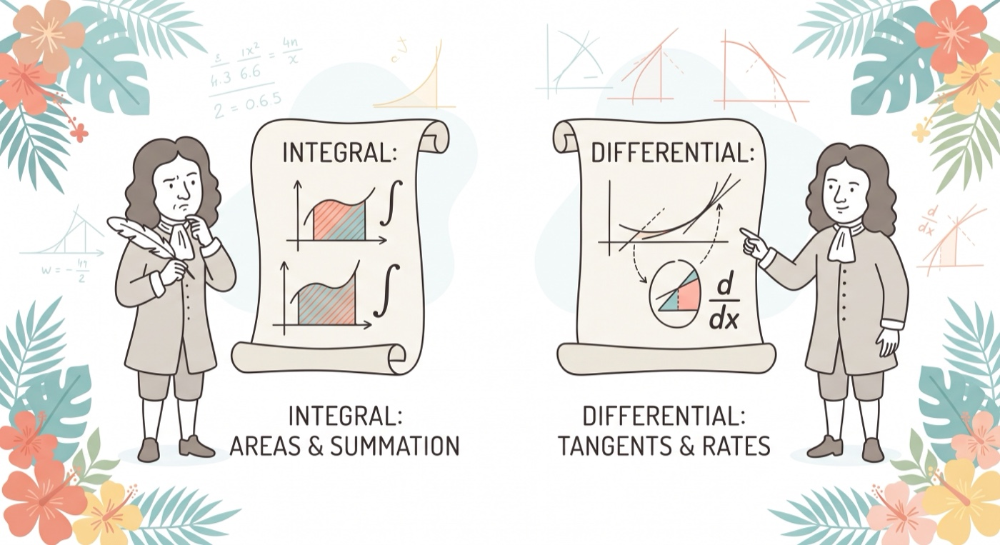
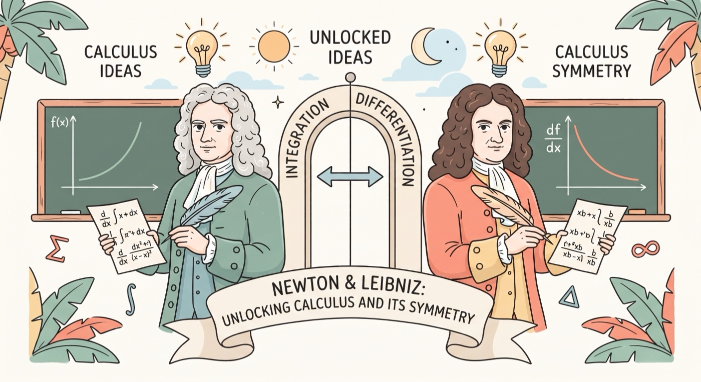
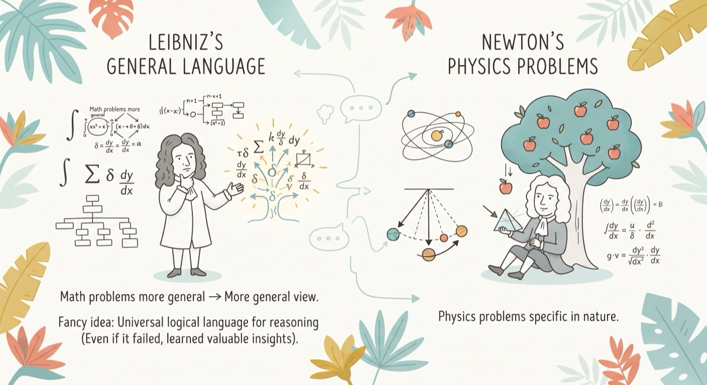
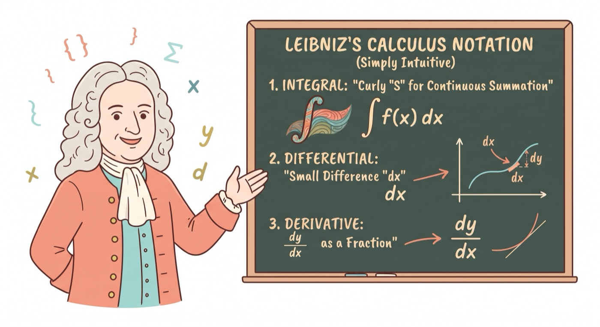
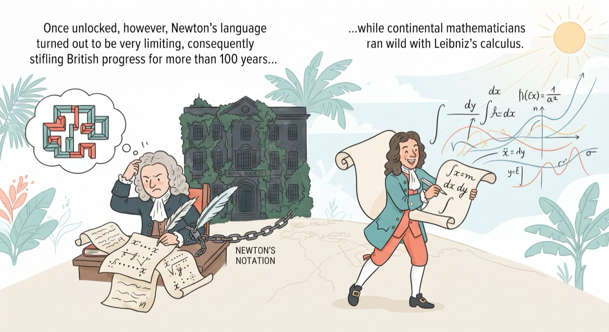
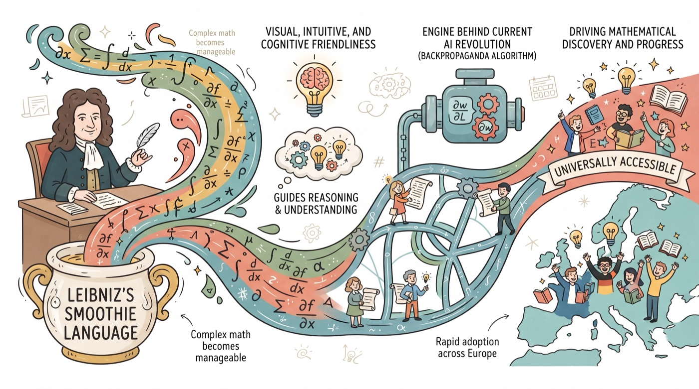
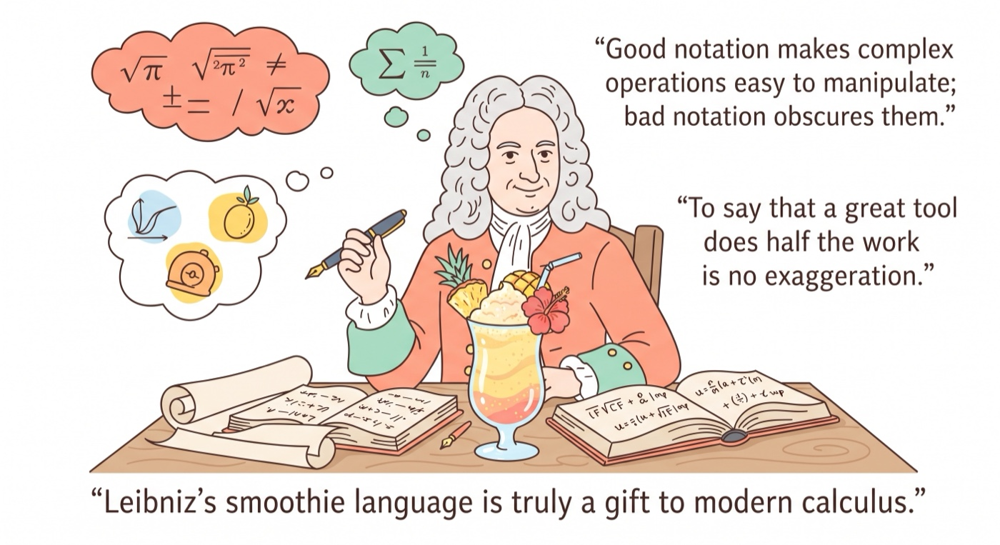

Leibniz's Smoothie Language, A Gift to Calculus
Sailin' N Voyages Series, Ep. 4
Companion article
1 During the 17th century, many rich gentlemen scientists were thinking about fancy math problems dealing with infinitesimals and made progress. In a way, all the pieces of calculus were already there. 2 Newton developed his methods from a physicist point of view as he was thinking about motion problems - instance speed or instance rate of change. His starting viewpoint is therefore differential, but integral was just a mirror image - Newton did not fail to see it, because he already had good grasps of both sides from his teacher and probably because he needed to deal with calculating distance, which is the “mirror” of speed.
3 Leibniz developed his methods years later from a general scientist’s point of view, and he was thinking about some famous math problems dealing with areas, the viewpoint of which is therefore integral. He also did not fail to see the mirror image, meaning differential.
4 The real historical facts are of course nuanced, but generally speaking, this does not deviate too much. Basically, both individuals unlocked the idea and its mirror image or the symmetry.
5 What differentiated them is Leibniz’s language, likely because his math problems are more general in nature than Newton’s physics problems, and gave him a more general view. Leibniz, however, also had a fancy idea of developing a universal logical language for reasoning; while it failed, naturally, he must have learned some very valuable insights.
6 His language or notations for calculus is very simple, intuitive, and expressive. For example: the integral sign is a curly S suggesting continuous Summation, dx means small Difference in x, dy over dx resemble everyday fractions, They are visually intuitive and conceptually sound.
7 The idea of calculus was not itself hard, requiring a real need, a natural angle and perhaps a moment of genius. Once unlocked, however, Newton’s language turned out to be very limiting, consequently stifling British progress for more than 100 years while continental mathematicians ran wild with Leibniz’s calculus.
8 The consequence of Leibniz’s smoothie language is another mirror image: Its visual, intuitive and cognitive friendliness and soundness help guide reasoning and understanding. Its expressiveness made complex math problems manageable and solvable - imagine the engine behind current AI revolution, the backprop algorithm, without Leibniz's or similar partial derivative chain. It suddenly made calculus universally accessible, enabled rapid adoption across continental Europe, driving mathematical discovery and progress. The AI example is a bit exaggerated, since the rules were obvious and the functional algebraic notations would’ve been found anyway.
9 The comparison between the languages illustrate the importance of notational choice. Good notation makes complex operations easy to manipulate; bad notation obscures them. To say that a great tool does half the work is no exaggeration. Leibniz’s smoothie language is truly a gift to modern calculus.